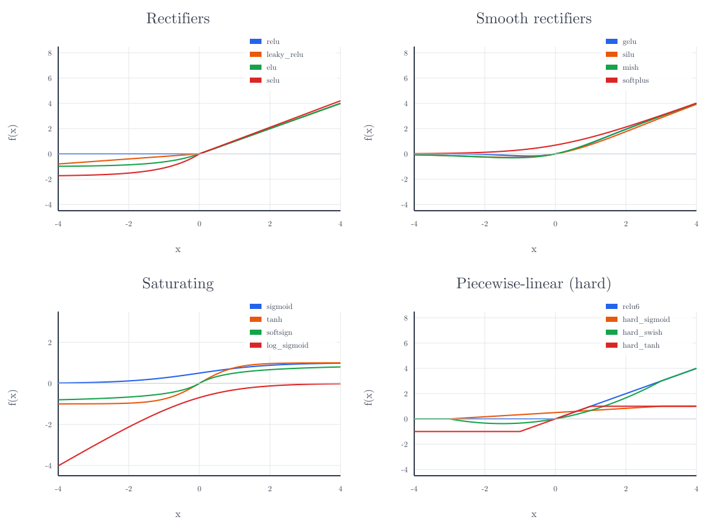
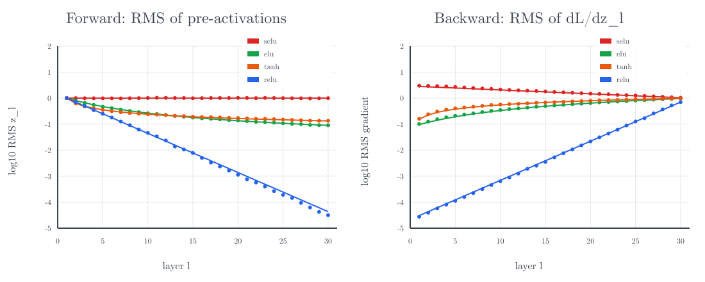
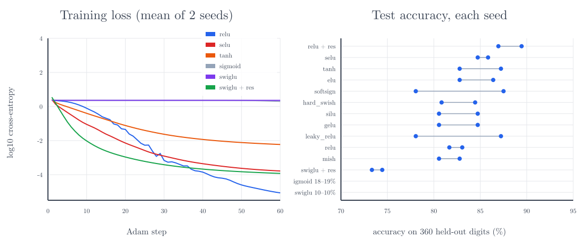

Activation Functions: Shapes, Gaussian Moments and Depth
Abstract
An activation function is a scalar nonlinearity applied elementwise between linear layers. Its shape matters less than two numbers: under a Gaussian input
\(Z\sim\mathcal N(0,q)\), the second moments \(\mathbb E[f(Z)^2]\) and \(\mathbb E[f'(Z)^2]\). The first fixes the weight scale that keeps the forward signal's variance constant. The second
then decides whether gradients grow or shrink per layer. This report checks 17 activations and four gated linear units against their closed forms, tabulates both moments for
every activation, and derives SELU's constants \(\lambda\) and \(\alpha\) in closed form from the two equations \(\mathbb E[f]=0\) and \(\mathbb E[f^2]=1\), reproducing the published values to 15 significant digits.
Mean-field predictions match 30-layer networks to within 6% for SELU, ELU and tanh, forwards and backwards. They also show that a plain stack of gated units has a repelling fixed point, which
explains why a deep SwiGLU network without residual connections never leaves chance on the digits data, while the same units in pre-norm residual blocks train at once. The library gained
four activations (HardSigmoid, HardSwish, HardTanh, LogSigmoid), nn::glu and nn::activation_moments.
The problem
Without a nonlinearity between them, a stack of linear layers is one linear map. The activation \(f\) that breaks this is usually chosen by habit: ReLU for convolutional networks, GELU or SwiGLU for transformers, tanh inside recurrent cells. The choice interacts with the initialisation, since a weight scale that suits one activation can make the signal vanish or explode under another, and with the architecture, since some units only work inside residual blocks. This report asks what each activation looks like, which numbers decide how it behaves in a deep network, and whether those numbers predict what happens in practice.
This report replaces the original example examples/nn/0_foundations/0.2_reusable_layer_library/activations.cpp. That example checked 13 activations' gradients against closed forms on a
grid, listed their statistics on \(\mathcal N(0,1)\), and showed SELU keeping its scale through 30 layers. All three are kept here, extended to the four new activations and the gated units, and joined by the theory
that explains the third.
The method
Four families
nn::activate(x, kind, alpha) applies one of the nn::Activation kinds elementwise, through ordinary differentiable ops, so autograd supplies \(f'\).
- Rectifiers. ReLU \(\max(x,0)\) (Nair and Hinton, 2010), leaky ReLU \(\max(x,ax)\) (Maas et al., 2013), ELU, which is \(x\) for \(x>0\) and \(e^x-1\) otherwise (Clevert et al., 2016), and SELU \(\lambda\,\mathrm{elu}_\alpha(x)\) (Klambauer et al., 2017).
- Smooth rectifiers. GELU \(x\Phi(x)\) and its tanh approximation (Hendrycks and Gimpel, 2016), SiLU or swish \(x\sigma(x)\) (Elfwing et al., 2018; Ramachandran et al., 2017), Mish \(x\tanh(\operatorname{softplus}x)\) (Misra, 2020) and softplus \(\log(1+e^x)\). The first three dip below zero for negative inputs and are not monotone.
- Saturating. Sigmoid \(\sigma(x)=1/(1+e^{-x})\), tanh, softsign \(x/(1+\lvert x\rvert)\) and log-sigmoid \(\log\sigma(x)=-\operatorname{softplus}(-x)\).
- Piecewise-linear. ReLU6 \(\min(\max(x,0),6)\), hard sigmoid \(\mathrm{relu6}(x+3)/6\), hard swish \(x\,\mathrm{relu6}(x+3)/6\) (Howard et al., 2019) and hard tanh \(\operatorname{clip}(x,-1,1)\), cheap stand-ins for their smooth namesakes.
At a kink the derivative is undefined. Autograd returns one one-sided value, and the report records which.
Gaussian moments decide the weight scale
The report on initialisers derived the mean-field recursion for a deep network with weights of variance \(s/n_{\text{in}}\). If layer \(l\)'s pre-activations are approximately \(\mathcal N(0,q_l)\), then
where \(\delta_l\) is the gradient of the loss with respect to layer \(l\)'s pre-activations and \(Z\sim\mathcal N(0,1)\) (Poole et al., 2016; Schoenholz et al., 2017). The forward signal keeps \(q=1\) when \(s=1/\mathbb E[f(Z)^2]\), the square of the activation's natural gain. At that scale the gradient's per-layer factor is
If \(\chi^\ast<1\), gradients vanish geometrically with depth (the ordered phase). If \(\chi^\ast>1\), they grow (the chaotic phase). For a positively homogeneous activation, \(f(x)=xf'(x)\) gives \(\chi^\ast=1\)
exactly: for ReLU, both moments equal \(1/2\). nn::activation_moments(kind, q) computes \(\mathbb E f\), \(\mathbb E f^2\), \(\operatorname{Var}f\), \(\mathbb E f'\) and \(\mathbb E f'^2\) under \(\mathcal N(0,q)\) by the midpoint rule
on about 24 000 cells over \(\pm12\sqrt q\), with \(f'\) from autograd. Every kink of the built-in activations sits at an integer (0, \(\pm1\), \(\pm3\), 6), and a jump in \(f'\) on a cell boundary costs the midpoint
rule nothing, so the cells are aligned to the integers.
SELU's constants from two equations
Klambauer et al. (2017) chose \(\lambda\) and \(\alpha\) so that \(\mathcal N(0,1)\) inputs give outputs with mean 0 and variance 1. Both moments have closed forms. For \(Z\sim\mathcal N(0,1)\), \(\mathbb E[Z\,1\{Z>0\}]=\varphi(0)=1/\sqrt{2\pi}\) and \(\mathbb E[Z^2\,1\{Z>0\}]=1/2\). Completing the square in \(e^z\varphi(z)=e^{1/2}\varphi(z-1)\) gives \(\mathbb E[e^Z\,1\{Z<0\}]=\sqrt e\,\Phi(-1)\), and likewise \(\mathbb E[e^{2Z}\,1\{Z<0\}]=e^2\,\Phi(-2)\). Hence
The mean equation \(\lambda(\varphi(0)+\alpha m_1)=0\) does not involve \(\lambda\), and the variance equation then fixes it:
Gated linear units
A gated linear unit splits its input \(x\) into halves \(a\) and \(b\) and returns \(a\odot g(b)\) (Dauphin et al., 2017). With \(g=\sigma\) it is GLU, and with \(g\) equal to SiLU, GELU or ReLU it is SwiGLU, GeGLU or ReGLU,
the feed-forward units of most recent transformers (Shazeer, 2020). nn::glu(x, gate, axis) implements all four. A gated unit is a product of two pre-activations. If \(a\) and \(b\) are
independent \(\mathcal N(0,q)\), then \(\mathbb E[(a\,g(b))^2]=q\,\mathbb E[g(\sqrt q\,Z)^2]\), and the mean-field map becomes \(q\mapsto s\,q\,\mathbb E[g(\sqrt q\,Z)^2]\). For SiLU this grows faster than linearly in \(q\), which matters below.
Simple examples
Every activation against its closed form
The program below writes \(f\) and \(f'\) for every activation out by hand and compares them with nn::activate and its autograd gradient on 8001 points in \([-8,8]\), skipping the kinks for \(f'\).
It also prints the original example's grid, the derivatives autograd returns at the kinks and the minima of the non-monotone rectifiers. Finally it checks the four gated units by finite
differences, to first and second order.
#include <dm/dm.hpp>
namespace nn = dm::nn;
using nn::Activation;
using nn::Tensor;
// Closed forms of f and f', written out independently of the library.
constexpr double kLambda = 1.0507009873554804934193349852946, kAlpha = 1.6732632423543772848170429916717, kLeak = 0.2;
double sig(double x) { return 1 / (1 + std::exp(-x)); }
double softplus(double x) { return x > 30 ? x : std::log1p(std::exp(x)); }
double pdf(double x) { return std::exp(-0.5 * x * x) / std::sqrt(2 * std::numbers::pi); }
double cdf(double x) { return 0.5 * std::erfc(-x / std::sqrt(2.0)); }
double F(Activation a, double x) {
const double c = std::sqrt(2 / std::numbers::pi);
switch (a) {
case Activation::None: return x;
case Activation::Relu: return std::max(x, 0.0);
case Activation::Relu6: return std::clamp(x, 0.0, 6.0);
case Activation::LeakyRelu: return x > 0 ? x : kLeak * x;
case Activation::Elu: return x > 0 ? x : std::expm1(x);
case Activation::Selu: return kLambda * (x > 0 ? x : kAlpha * std::expm1(x));
case Activation::Gelu: return x * cdf(x);
case Activation::GeluTanh: return 0.5 * x * (1 + std::tanh(c * (x + 0.044715 * x * x * x)));
case Activation::Silu: return x * sig(x);
case Activation::Mish: return x * std::tanh(softplus(x));
case Activation::Softplus: return softplus(x);
case Activation::Softsign: return x / (1 + std::abs(x));
case Activation::Sigmoid: return sig(x);
case Activation::Tanh: return std::tanh(x);
case Activation::HardSigmoid: return std::clamp(x + 3, 0.0, 6.0) / 6;
case Activation::HardSwish: return x * std::clamp(x + 3, 0.0, 6.0) / 6;
case Activation::HardTanh: return std::clamp(x, -1.0, 1.0);
case Activation::LogSigmoid: return -softplus(-x);
}
return x;
}
double dF(Activation a, double x) {
const double c = std::sqrt(2 / std::numbers::pi);
switch (a) {
case Activation::None: return 1;
case Activation::Relu: return x > 0;
case Activation::Relu6: return x > 0 && x < 6;
case Activation::LeakyRelu: return x > 0 ? 1 : kLeak;
case Activation::Elu: return x > 0 ? 1 : std::exp(x);
case Activation::Selu: return kLambda * (x >= 0 ? 1 : kAlpha * std::exp(x));
case Activation::Gelu: return cdf(x) + x * pdf(x);
case Activation::GeluTanh: {
const double t = std::tanh(c * (x + 0.044715 * x * x * x));
return 0.5 * (1 + t) + 0.5 * x * (1 - t * t) * c * (1 + 3 * 0.044715 * x * x);
}
case Activation::Silu: return sig(x) * (1 + x * (1 - sig(x)));
case Activation::Mish: { const double t = std::tanh(softplus(x)); return t + x * (1 - t * t) * sig(x); }
case Activation::Softplus: return sig(x);
case Activation::Softsign: return 1 / ((1 + std::abs(x)) * (1 + std::abs(x)));
case Activation::Sigmoid: return sig(x) * (1 - sig(x));
case Activation::Tanh: return 1 - std::tanh(x) * std::tanh(x);
case Activation::HardSigmoid: return x > -3 && x < 3 ? 1.0 / 6 : 0;
case Activation::HardSwish: return x <= -3 ? 0 : x >= 3 ? 1 : (2 * x + 3) / 6;
case Activation::HardTanh: return x > -1 && x < 1;
case Activation::LogSigmoid: return sig(-x);
}
return 1;
}
int main() {
std::filesystem::create_directories("build");
std::vector<Activation> all;
for (int k = 1; k <= static_cast<int>(nn::kLastActivation); ++k) all.push_back(static_cast<Activation>(k));
const std::vector<double> grid{-4, -2, -1, -0.5, 0, 0.5, 1, 2, 4};
// Autograd against the closed forms on a fine grid of 8001 points over [-8, 8], away from the kinks.
std::print("| activation |");
for (double g : grid) std::print(" f({}) |", g);
std::print(" largest \\|f − closed form\\| | largest \\|autograd f′ − closed form\\| |\n| :--- |");
for (std::size_t i = 0; i < grid.size() + 2; ++i) std::print(" ---: |");
std::print("\n");
std::vector<double> fine;
for (int i = 0; i <= 8000; ++i) fine.push_back(-8 + 0.002 * i);
for (Activation a : all) {
const auto gv = nn::activate(nn::from_vector(grid, {9}), a, kLeak).to_vector<double>();
Tensor x = nn::from_vector(fine, {8001}).requires_grad_(true);
const Tensor y = nn::activate(x, a, kLeak);
const auto yv = y.detach().to_vector<double>(), dv = nn::grad({nn::sum(y)}, {x})[0].to_vector<double>();
double ef = 0, ed = 0;
for (std::size_t i = 0; i < fine.size(); ++i) {
const double xi = fine[i];
ef = std::max(ef, std::abs(yv[i] - F(a, xi)));
const bool kink = std::abs(xi) < 1e-9 || std::abs(xi - 6) < 1e-9 || std::abs(std::abs(xi) - 3) < 1e-9 || std::abs(std::abs(xi) - 1) < 1e-9;
if (!kink) ed = std::max(ed, std::abs(dv[i] - dF(a, xi)));
}
std::print("| {} |", nn::activation_name(a));
for (double v : gv) std::print(" {:.3f} |", v);
std::print(" {:.1e} | {:.1e} |\n", ef, ed);
}
// At the kinks the library picks one side, as TensorFlow does.
Tensor k = nn::tensor({0.0, -3.0, 3.0, 6.0, -1.0, 1.0}, {6}, nn::DType::Float64).requires_grad_(true);
std::print("\nAutograd at kinks x = (0, -3, 3, 6, -1, 1): relu′ {}, relu6′ {}, hard_sigmoid′ {}, hard_swish′ {}, hard_tanh′ {}, selu′(0) = {:.4f}.\n",
nn::grad({nn::sum(nn::activate(k, Activation::Relu))}, {k})[0].values_str(), nn::grad({nn::sum(nn::activate(k, Activation::Relu6))}, {k})[0].values_str(),
nn::grad({nn::sum(nn::activate(k, Activation::HardSigmoid))}, {k})[0].values_str(4), nn::grad({nn::sum(nn::activate(k, Activation::HardSwish))}, {k})[0].values_str(4),
nn::grad({nn::sum(nn::activate(k, Activation::HardTanh))}, {k})[0].values_str(), nn::grad({nn::sum(nn::activate(k, Activation::Selu))}, {k})[0].to_vector<double>()[0]);
// The non-monotone smooth rectifiers have a minimum below zero: solve f'(x) = 0 by bisection on [-3, 0].
for (Activation a : {Activation::Gelu, Activation::Silu, Activation::Mish, Activation::HardSwish}) {
double lo = -3, hi = -0.01;
for (int it = 0; it < 200; ++it) { const double mid = 0.5 * (lo + hi); (dF(a, mid) < 0 ? lo : hi) = mid; }
std::print("{}: minimum f = {:.4f} at x = {:.4f}. ", nn::activation_name(a), F(a, 0.5 * (lo + hi)), 0.5 * (lo + hi));
}
std::print("\n");
// GLU family: a * g(b) on the last axis, checked by finite differences, first and second derivatives.
nn::Generator gen(3);
const nn::Tensor u = nn::normal({5, 8}, 0.0, 1.0, gen, nn::DType::Float64).requires_grad_(true);
for (auto [name, gate] : std::vector<std::pair<std::string, Activation>>{{"glu", Activation::Sigmoid}, {"swiglu", Activation::Silu}, {"geglu", Activation::Gelu}, {"reglu", Activation::Relu}}) {
auto f = [gate](const std::vector<nn::Tensor>& in) { return nn::glu(in[0], gate); };
const auto g1 = nn::gradcheck(f, {u}), g2 = nn::gradgradcheck(f, {u});
std::print("{}: output shape {}, gradcheck max error {:.1e} ({}), gradgradcheck {}. ", name, nn::shape_str(nn::glu(u, gate).shape()), g1.max_abs_error,
g1.ok ? "pass" : "FAIL", g2.ok ? "pass" : "FAIL");
}
std::print("\n");
// Figure: four families of activations.
const std::vector<std::pair<std::string, std::vector<Activation>>> groups = {
{"Rectifiers", {Activation::Relu, Activation::LeakyRelu, Activation::Elu, Activation::Selu}},
{"Smooth rectifiers", {Activation::Gelu, Activation::Silu, Activation::Mish, Activation::Softplus}},
{"Saturating", {Activation::Sigmoid, Activation::Tanh, Activation::Softsign, Activation::LogSigmoid}},
{"Piecewise-linear (hard)", {Activation::Relu6, Activation::HardSigmoid, Activation::HardSwish, Activation::HardTanh}}};
const dm::graphics::RGB cols[] = {{37, 99, 235}, {234, 88, 12}, {22, 163, 74}, {220, 38, 38}};
std::vector<double> xs;
for (int i = 0; i <= 400; ++i) xs.push_back(-4 + 0.02 * i);
auto fig = dm::graphics::RLayout::create(2, 2);
for (const auto& [title, acts] : groups) {
auto p = dm::graphics::RPlot::create();
for (std::size_t j = 0; j < acts.size(); ++j) {
std::vector<double> ys;
for (double x : xs) ys.push_back(F(acts[j], x));
p.lines(xs, ys, nn::activation_name(acts[j]), cols[j], 2.0);
}
p.lines({-4.0, 4.0}, {0.0, 0.0}, "", dm::graphics::RGB{203, 213, 225}, 1.0);
p.x_limits(-4, 4).y_limits(-4.5, title == "Saturating" ? 3.5 : 8.5).title(title).x_label("x").y_label("f(x)");
fig.add(p);
}
fig.size(1100, 820).fit_panels();
fig.save("build/activations_curves.svg");
}| activation | f(-4) | f(-2) | f(-1) | f(-0.5) | f(0) | f(0.5) | f(1) | f(2) | f(4) | largest |f − closed form| | largest |autograd f′ − closed form| |
|---|---|---|---|---|---|---|---|---|---|---|---|
| relu | 0.000 | 0.000 | 0.000 | 0.000 | 0.000 | 0.500 | 1.000 | 2.000 | 4.000 | 0.0e+00 | 0.0e+00 |
| relu6 | 0.000 | 0.000 | 0.000 | 0.000 | 0.000 | 0.500 | 1.000 | 2.000 | 4.000 | 0.0e+00 | 0.0e+00 |
| leaky_relu | -0.800 | -0.400 | -0.200 | -0.100 | 0.000 | 0.500 | 1.000 | 2.000 | 4.000 | 0.0e+00 | 0.0e+00 |
| elu | -0.982 | -0.865 | -0.632 | -0.393 | 0.000 | 0.500 | 1.000 | 2.000 | 4.000 | 0.0e+00 | 1.1e-16 |
| selu | -1.726 | -1.520 | -1.111 | -0.692 | 0.000 | 0.525 | 1.051 | 2.101 | 4.203 | 0.0e+00 | 4.4e-16 |
| gelu | -0.000 | -0.046 | -0.159 | -0.154 | 0.000 | 0.346 | 0.841 | 1.954 | 4.000 | 8.9e-16 | 2.2e-16 |
| gelu_tanh | -0.000 | -0.045 | -0.159 | -0.154 | 0.000 | 0.346 | 0.841 | 1.955 | 4.000 | 4.4e-16 | 4.4e-16 |
| silu | -0.072 | -0.238 | -0.269 | -0.189 | 0.000 | 0.311 | 0.731 | 1.762 | 3.928 | 1.1e-16 | 2.2e-16 |
| mish | -0.073 | -0.253 | -0.303 | -0.221 | 0.000 | 0.375 | 0.865 | 1.944 | 3.997 | 4.4e-16 | 4.4e-16 |
| softplus | 0.018 | 0.127 | 0.313 | 0.474 | 0.693 | 0.974 | 1.313 | 2.127 | 4.018 | 8.9e-16 | 1.1e-16 |
| softsign | -0.800 | -0.667 | -0.500 | -0.333 | 0.000 | 0.333 | 0.500 | 0.667 | 0.800 | 0.0e+00 | 0.0e+00 |
| sigmoid | 0.018 | 0.119 | 0.269 | 0.378 | 0.500 | 0.622 | 0.731 | 0.881 | 0.982 | 1.1e-16 | 5.6e-17 |
| tanh | -0.999 | -0.964 | -0.762 | -0.462 | 0.000 | 0.462 | 0.762 | 0.964 | 0.999 | 0.0e+00 | 0.0e+00 |
| hard_sigmoid | 0.000 | 0.167 | 0.333 | 0.417 | 0.500 | 0.583 | 0.667 | 0.833 | 1.000 | 0.0e+00 | 0.0e+00 |
| hard_swish | -0.000 | -0.333 | -0.333 | -0.208 | 0.000 | 0.292 | 0.667 | 1.667 | 4.000 | 0.0e+00 | 2.2e-16 |
| hard_tanh | -1.000 | -1.000 | -1.000 | -0.500 | 0.000 | 0.500 | 1.000 | 1.000 | 1.000 | 0.0e+00 | 0.0e+00 |
| log_sigmoid | -4.018 | -2.127 | -1.313 | -0.974 | -0.693 | -0.474 | -0.313 | -0.127 | -0.018 | 8.9e-16 | 1.1e-16 |
Autograd at kinks x = (0, -3, 3, 6, -1, 1): relu′ [0, 0, 1, 1, 0, 1], relu6′ [0, 0, 1, 0, 0, 1], hard_sigmoid′ [0.166667, 0, 0, 0, 0.166667, 0.166667], hard_swish′ [0.5, 0, 1, 1, 0.166667, 0.833333], hard_tanh′ [1, 0, 0, 0, 1, 1], selu′(0) = 1.0507. gelu: minimum f = -0.1700 at x = -0.7518. silu: minimum f = -0.2785 at x = -1.2785. mish: minimum f = -0.3088 at x = -1.1924. hard_swish: minimum f = -0.3750 at x = -1.5000. glu: output shape [5, 4], gradcheck max error 6.7e-11 (pass), gradgradcheck pass. swiglu: output shape [5, 4], gradcheck max error 1.7e-10 (pass), gradgradcheck pass. geglu: output shape [5, 4], gradcheck max error 3.3e-11 (pass), gradgradcheck pass. reglu: output shape [5, 4], gradcheck max error 8.2e-11 (pass), gradgradcheck pass.

Every activation agrees with its closed form to within \(9\times10^{-16}\), and every autograd derivative to within \(4.4\times10^{-16}\), a few units in the last place of float64. The grid values reproduce the original example's table. At the kinks the gradient takes one side's value: ReLU's and ReLU6's derivatives are 0 at 0, ReLU6's is 0 at 6, hard tanh's is 1 at \(\pm1\), and hard swish's is 0 at \(-3\) and 1 at 3. SELU's derivative at 0 is \(\lambda\), the right-hand slope. None of this matters for training, since a kink is hit with probability zero.
GELU, SiLU, Mish and hard swish dip to minima of \(-0.170\), \(-0.2785\), \(-0.309\) and \(-0.375\). SiLU's has a closed form. Setting \(f'=\sigma(x)(1+x(1-\sigma(x)))\) to zero gives \(\sigma(x^\ast)=(1+x^\ast)/x^\ast\), so \(f(x^\ast)=x^\ast\sigma(x^\ast)=1+x^\ast\). The solution is \(x^\ast=-1-W(1/e)=-1.2785\) with Lambert's \(W\) (Corless et al., 1996), and the bisection finds \(x^\ast=-1.2785\), \(f=-0.2785\). The four gated units halve the last axis (\([5,8]\to[5,4]\)) and pass both finite-difference checks, with largest first-derivative error \(1.7\times10^{-10}\).
Checking the theory
Moments, gains and SELU
The next program tabulates nn::activation_moments for every activation at \(q=1\), solves SELU's two equations, iterates SELU's variance map and the gated map, and compares 30-layer networks of width 256 with their mean-field predictions.
The networks use LeCun-normal weights (\(s=1\)), a batch of 256 standard-normal inputs and nn::init::signal_propagation.
#include <dm/dm.hpp>
namespace nn = dm::nn;
using nn::Activation;
int main() {
std::filesystem::create_directories("build");
// Gaussian moments of every activation at q = 1, and the weight scale that makes q = 1 a fixed point.
std::print("| activation | E f(Z) | Var f(Z) | E f(Z)² | E f′(Z) | E f′(Z)² | gain √(1/E f²) | χ at that gain |\n");
std::print("| :--- | ---: | ---: | ---: | ---: | ---: | ---: | ---: |\n");
for (int k = 1; k <= static_cast<int>(nn::kLastActivation); ++k) {
const auto a = static_cast<Activation>(k);
const auto m = nn::activation_moments(a);
std::print("| {} | {:.4f} | {:.4f} | {:.4f} | {:.4f} | {:.4f} | {:.4f} | {:.4f} |\n", nn::activation_name(a), m.mean,
m.variance, m.second_moment, m.derivative_mean, m.derivative_second_moment, 1 / std::sqrt(m.second_moment),
m.derivative_second_moment / m.second_moment);
}
std::print("\nPyTorch gains: relu {:.4f}, tanh {:.4f}, selu {:.4f}, leaky_relu(0.2) {:.4f}.\n", nn::init::gain("relu"),
nn::init::gain("tanh"), nn::init::gain("selu"), nn::init::gain("leaky_relu", 0.2));
// SELU's constants in closed form: mean 0 and second moment 1 under N(0, 1).
const double phi0 = 1 / std::sqrt(2 * std::numbers::pi);
auto Phi = [](double x) { return 0.5 * std::erfc(-x / std::sqrt(2.0)); };
const double m1 = std::exp(0.5) * Phi(-1) - 0.5; // E[(e^Z - 1) 1{Z<0}]
const double m2 = std::exp(2.0) * Phi(-2) - 2 * std::exp(0.5) * Phi(-1) + 0.5; // E[(e^Z - 1)^2 1{Z<0}]
const double alpha = -phi0 / m1, lambda = 1 / std::sqrt(0.5 + alpha * alpha * m2);
std::print("\nSELU from the two moment equations: alpha = {:.16f}, lambda = {:.16f}.\n", alpha, lambda);
std::print("Library constants: alpha = 1.6732632423543772, lambda = 1.0507009873554805.\n");
const auto ms = nn::activation_moments(Activation::Selu);
std::print("Quadrature check: E selu(Z) = {:.1e}, E selu(Z)² = {:.8f}, chi = E selu′(Z)² = {:.4f}.\n", ms.mean,
ms.second_moment, ms.derivative_second_moment);
// The (mean, variance) fixed point is attracting: iterate the map from a perturbed start.
std::print("SELU variance map from q = 0.25 and q = 4: ");
for (double q0 : {0.25, 4.0}) {
double q = q0;
std::print("{}", q0);
for (int l = 0; l < 6; ++l) { q = nn::activation_moments(Activation::Selu, q).second_moment; std::print(" → {:.4f}", q); }
std::print("; ");
}
std::print("\n");
// A gated unit a * silu(b) with a, b ~ N(0, q) independent: q -> s q E silu(sqrt(q) Z)^2, s = 1 / E silu(Z)^2.
const double sg = 1 / nn::activation_moments(Activation::Silu).second_moment;
auto gated = [sg](double q) { return sg * q * nn::activation_moments(Activation::Silu, q).second_moment; };
const double e = 1e-4;
std::print("Gated (SwiGLU) map: fixed point q = 1 -> {:.6f}, slope there {:.4f}.\n", gated(1.0), (gated(1 + e) - gated(1 - e)) / (2 * e));
for (double q0 : {sg * 0.0733, 1.1, 0.9}) {
double q = q0;
std::print(" from q = {:.3f}:", q0);
for (int l = 0; l < 9 && q < 1e12; ++l) { q = gated(q); std::print(" {:.3g}", q); }
std::print("\n");
}
// Depth: 30 bias-free layers of width 256 with LeCun-normal weights, measured against mean field.
constexpr int depth = 30, width = 256, batch = 256;
const std::vector<std::int64_t> widths(depth + 1, width);
const std::vector<std::pair<Activation, dm::graphics::RGB>> acts = {
{Activation::Selu, {220, 38, 38}}, {Activation::Elu, {22, 163, 74}}, {Activation::Tanh, {234, 88, 12}}, {Activation::Relu, {37, 99, 235}}};
auto pf = dm::graphics::RPlot::create(), pb = dm::graphics::RPlot::create();
std::vector<double> layers;
for (int l = 1; l <= depth; ++l) layers.push_back(l);
std::print("\n| activation | measured RMS z₁₀ | mean field | measured RMS z₃₀ | mean field | measured grad RMS at layer 1 | mean field |\n| :--- | ---: | ---: | ---: | ---: | ---: | ---: |\n");
for (const auto& [a, col] : acts) {
nn::Generator gen(7);
const auto sp = nn::init::signal_propagation(widths, nn::init::variance_scaling(1.0, nn::init::FanMode::FanIn, nn::init::Distribution::Normal),
[a](const nn::Tensor& z) { return nn::activate(z, a); }, batch, gen);
// Mean field: q_1 = 1, q_{l+1} = E f(sqrt(q_l) Z)^2; gradient variance at layer l = prod_{k >= l} E f'(sqrt(q_k) Z)^2.
std::vector<double> q{1.0}, d2;
for (int l = 0; l < depth; ++l) {
const auto m = nn::activation_moments(a, std::max(q.back(), 1e-300));
d2.push_back(m.derivative_second_moment);
if (l + 1 < depth) q.push_back(m.second_moment);
}
std::vector<double> back(depth);
double acc = 1;
for (int l = depth - 1; l >= 0; --l) back[l] = (acc *= d2[l]);
std::vector<double> mf_f, mf_b, ms_f, ms_b;
for (int l = 0; l < depth; ++l) {
mf_f.push_back(0.5 * std::log10(q[l])), mf_b.push_back(0.5 * std::log10(back[l]));
ms_f.push_back(std::log10(sp.forward_rms[l])), ms_b.push_back(std::log10(sp.backward_rms[l]));
}
std::print("| {} | {:.4f} | {:.4f} | {:.3g} | {:.3g} | {:.3g} | {:.3g} |\n", nn::activation_name(a), sp.forward_rms[9], std::sqrt(q[9]),
sp.forward_rms[29], std::sqrt(q[29]), sp.backward_rms[0], std::sqrt(back[0]));
pf.lines(layers, mf_f, nn::activation_name(a), col, 2.0).points(layers, ms_f, col, 3.0);
pb.lines(layers, mf_b, nn::activation_name(a), col, 2.0).points(layers, ms_b, col, 3.0);
}
pf.x_limits(0, 31).y_limits(-5, 2).title("Forward: RMS of pre-activations").x_label("layer l").y_label("log10 RMS z_l");
pb.x_limits(0, 31).y_limits(-5, 2).title("Backward: RMS of dL/dz_l").x_label("layer l").y_label("log10 RMS gradient");
auto fig = dm::graphics::RLayout::create(1, 2);
fig.add(pf).add(pb);
fig.size(1100, 440).fit_panels();
fig.save("build/activations_depth.svg");
}| activation | E f(Z) | Var f(Z) | E f(Z)² | E f′(Z) | E f′(Z)² | gain √(1/E f²) | χ at that gain |
|---|---|---|---|---|---|---|---|
| relu | 0.3989 | 0.3408 | 0.5000 | 0.5000 | 0.5000 | 1.4142 | 1.0000 |
| relu6 | 0.3989 | 0.3408 | 0.5000 | 0.5000 | 0.5000 | 1.4142 | 1.0000 |
| leaky_relu | 0.3192 | 0.4181 | 0.5200 | 0.6000 | 0.5200 | 1.3868 | 1.0000 |
| elu | 0.1605 | 0.6192 | 0.6449 | 0.7616 | 0.6681 | 1.2452 | 1.0359 |
| selu | -0.0000 | 1.0000 | 1.0000 | 0.9852 | 1.0716 | 1.0000 | 1.0716 |
| gelu | 0.2821 | 0.3456 | 0.4252 | 0.5000 | 0.4559 | 1.5335 | 1.0720 |
| gelu_tanh | 0.2820 | 0.3456 | 0.4252 | 0.5000 | 0.4558 | 1.5336 | 1.0720 |
| silu | 0.2066 | 0.3131 | 0.3558 | 0.5000 | 0.3795 | 1.6765 | 1.0666 |
| mish | 0.2404 | 0.3945 | 0.4523 | 0.5637 | 0.4791 | 1.4868 | 1.0591 |
| softplus | 0.8061 | 0.2715 | 0.9212 | 0.5000 | 0.2934 | 1.0419 | 0.3185 |
| softsign | -0.0000 | 0.1830 | 0.1830 | 0.4128 | 0.2277 | 2.3375 | 1.2440 |
| sigmoid | 0.5000 | 0.0434 | 0.2934 | 0.2066 | 0.0448 | 1.8462 | 0.1528 |
| tanh | -0.0000 | 0.3943 | 0.3943 | 0.6057 | 0.4644 | 1.5925 | 1.1778 |
| hard_sigmoid | 0.5000 | 0.0276 | 0.2776 | 0.1662 | 0.0277 | 1.8978 | 0.0998 |
| hard_swish | 0.1662 | 0.3039 | 0.3316 | 0.5000 | 0.3585 | 1.7367 | 1.0813 |
| hard_tanh | -0.0000 | 0.5161 | 0.5161 | 0.6827 | 0.6827 | 1.3920 | 1.3229 |
| log_sigmoid | -0.8061 | 0.2715 | 0.9212 | 0.5000 | 0.2934 | 1.0419 | 0.3185 |
PyTorch gains: relu 1.4142, tanh 1.6667, selu 0.7500, leaky_relu(0.2) 1.3868.
SELU from the two moment equations: alpha = 1.6732632423543778, lambda = 1.0507009873554805. Library constants: alpha = 1.6732632423543772, lambda = 1.0507009873554805. Quadrature check: E selu(Z) = -1.2e-08, E selu(Z)² = 1.00000000, chi = E selu′(Z)² = 1.0716. SELU variance map from q = 0.25 and q = 4: 0.25 → 0.3307 → 0.4156 → 0.4996 → 0.5789 → 0.6506 → 0.7136; 4 → 3.0060 → 2.3835 → 1.9796 → 1.7086 → 1.5214 → 1.3889; Gated (SwiGLU) map: fixed point q = 1 -> 1.000000, slope there 2.1726. from q = 0.206: 0.0338 0.000821 4.74e-07 1.58e-13 1.76e-26 2.17e-52 3.31e-104 7.7e-208 0 from q = 1.100: 1.23 1.57 2.65 8.26 90 1.14e+04 1.81e+08 4.61e+16 from q = 0.900: 0.795 0.608 0.34 0.0977 0.00716 3.62e-05 9.22e-10 5.97e-19 2.5e-37
| activation | measured RMS z₁₀ | mean field | measured RMS z₃₀ | mean field | measured grad RMS at layer 1 | mean field |
|---|---|---|---|---|---|---|
| selu | 1.0146 | 1.0000 | 0.999 | 1 | 3 | 2.82 |
| elu | 0.2626 | 0.2663 | 0.0909 | 0.0897 | 0.101 | 0.0964 |
| tanh | 0.2423 | 0.2409 | 0.134 | 0.133 | 0.161 | 0.155 |
| relu | 0.0464 | 0.0442 | 3.15e-05 | 4.32e-05 | 2.76e-05 | 3.05e-05 |

The table. The ReLU moments are exact: \(\mathbb E f=1/\sqrt{2\pi}=0.3989\), and \(\mathbb E f^2=\mathbb E f'=\mathbb E f'^2=1/2\). Hard sigmoid's \(\mathbb E f'=P(\lvert Z\rvert<3)/6=0.1662\) and SELU's \(\mathbb E f'^2=\lambda^2(\tfrac12+\alpha^2e^2\Phi(-2))=1.0716\) agree with
their closed forms. The natural gain \(1/\sqrt{\mathbb E f^2}\) reproduces PyTorch's ReLU gain \(\sqrt2\) and leaky-ReLU gain \(\sqrt{2/(1+a^2)}=1.3868\). For tanh it is 1.5925, a little below the conventional 5/3, which the
initialiser report found to be slightly chaotic. For SELU it is exactly 1, the LeCun scale that self-normalisation assumes. PyTorch's calculate_gain returns 3/4 for SELU, and its documentation recommends gain 1 for self-normalising networks.
The last column sorts the activations into phases. The positively homogeneous ones (ReLU, leaky ReLU, and ReLU6 near the origin) have \(\chi^\ast=1.0000\), as derived. ELU and the smooth rectifiers sit just inside the chaotic phase, at 1.04 (ELU) to 1.08 (hard swish), and so does SELU at 1.0716. Tanh, softsign and hard tanh are further in, at 1.18 to 1.32. Sigmoid, hard sigmoid, softplus and log-sigmoid are deep in the ordered phase, at 0.10 to 0.32. Their non-zero mean (0.5 for the sigmoids, \(\pm0.81\) for softplus and log-sigmoid) inflates \(\mathbb E f^2\) without adding slope, so at the gain that holds the forward signal, gradients shrink by a factor of 3 to 10 in variance per layer.
SELU. The closed forms give \(\lambda=1.0507009873554805\), identical to the published constant, and \(\alpha=1.6732632423543778\), which differs from it in the 16th significant digit. Quadrature confirms \(\mathbb E\,\mathrm{selu}(Z)=-1.2\times10^{-8}\) and \(\mathbb E\,\mathrm{selu}(Z)^2=1.00000000\). The fixed point attracts: the variance map moves \(q=0.25\) to 0.71 and \(q=4\) to 1.39 in six layers, slowly but in the right direction. Yet \(\chi^\ast=1.0716\), so even at its fixed point SELU grows gradient variance by 7% per layer.
Depth. The mean field predicts all four networks well. At layer 30 the measured RMS is 0.999 for SELU (predicted 1), 0.0909 for ELU (0.0897) and 0.134 for tanh (0.133). At LeCun scale ReLU halves the variance at each layer, predicting \(2^{-29/2}=4.3\times10^{-5}\) at layer 30. The measured value, \(3.2\times10^{-5}\), is within the finite-width fluctuation the initialiser report described. Backwards, SELU's layer-1 gradient is 3.0 times its layer-30 value (predicted \(\prod\chi^{1/2}=2.82\)). ELU and tanh gradients shrink to 0.101 and 0.161 (predicted 0.096 and 0.155), and ReLU's to \(2.8\times10^{-5}\) (\(3.0\times10^{-5}\)). SELU is the only one of the four whose forward signal is stable at \(s=1\), as the original example showed. Its gradients, however, are not.
The gated map. At \(s=1/\mathbb E[\mathrm{silu}(Z)^2]\), \(q=1\) is a fixed point of the SwiGLU map, but its slope there is 2.17. For an ordinary activation the map \(q\mapsto s\,\mathbb E f(\sqrt q Z)^2\) has slope at most 1 at its fixed point (exactly 1 for ReLU). The gated map has an extra factor of \(q\), so the fixed point repels. Starting from \(q=0.9\) or \(1.1\), nine layers carry the variance to \(2.5\times10^{-37}\) or past \(10^{16}\). Starting from \(q=0.206\), the first-layer variance a centred digit image gives (below), it reaches \(10^{-26}\) by the fifth layer.
A dataset: activations in a deep network on digits
The digits data (Alpaydin and Kaynak, 1998) give 1797 handwritten digits as \(8\times8\) images with grey levels 0 to 16. Scale the pixels to \([0,1]\), centre them, train on the first 400 and test on the last 360 (a small training set keeps the fourteen fits quick). Each network has ten bias-free hidden layers of width 64 and a linear output layer, initialised with each activation's natural scale \(s=1/\mathbb E f(Z)^2\) from the table. Training is 60 full-batch Adam steps in single precision at learning rate 0.003, repeated for two seeds. SwiGLU layers map 64 to 128 and gate back down to 64. The two "+ res" networks use pre-norm residual blocks, \(h\leftarrow h+f(h/\mathrm{RMS}(h)\,W)\), with LeCun weights in the branch, the arrangement of a transformer's feed-forward block (Xiong et al., 2020).
#include <dm/dm.hpp>
namespace nn = dm::nn;
namespace init = dm::nn::init;
using nn::Activation;
using nn::Tensor;
int main() {
std::filesystem::create_directories("build");
const auto F32 = nn::DType::Float32;
// 1797 digits, 64 pixels scaled to [0, 1] and centred (means over all 1797); the first 400 train, the last 360 test.
const auto digits = dm::datasets::digits();
const std::int64_t n = 1797, d = 64, n_train = 1437, n_fit = 400;
std::vector<double> v(static_cast<std::size_t>(n * d));
for (std::int64_t j = 0; j < d; ++j) {
const auto c = digits.get_column<double>(std::format("pixel_{}", j)).values();
const double m = std::accumulate(c.begin(), c.end(), 0.0) / n / 16.0;
for (std::int64_t i = 0; i < n; ++i) v[i * d + j] = c[i] / 16.0 - m;
}
const auto label = digits.get_column<double>("digit").values();
const Tensor X = nn::cast(nn::from_vector(v, {n, d}), F32);
const Tensor y = nn::cast(nn::from_vector(label, {n}), nn::DType::Int64);
const Tensor Xtr = nn::slice(X, {0, 0}, {n_fit, d}), Xte = nn::slice(X, {n_train, 0}, {n - n_train, d});
const Tensor ytr = nn::slice(y, {0}, {n_fit}), yte = nn::slice(y, {n_train}, {n - n_train});
// Ten hidden layers of width 64, no biases, each initialised with variance 1 / (64 E f(Z)^2) so that q = 1 is
// the mean-field fixed point; full-batch Adam, learning rate 0.003, 60 steps, two seeds, Float32.
// "swiglu" is a hidden layer 64 -> 128 followed by glu(., Silu): a * silu(b), back to width 64.
// "+ res" variants use pre-norm residual blocks, h <- h + f(norm(h) W), with norm(h) = h / RMS(h) per row and
// LeCun weights (variance 1/64) in the branch, as in a transformer feed-forward block.
const int hidden = 10, steps = 60;
const std::vector<std::uint64_t> seeds{1, 2};
struct Run { std::string name; Activation act; bool gated; bool residual{false}; std::vector<double> loss; std::vector<double> acc; double scale{1}; };
std::vector<Run> runs;
for (Activation a : {Activation::Relu, Activation::LeakyRelu, Activation::Elu, Activation::Selu, Activation::Gelu, Activation::Silu,
Activation::Mish, Activation::HardSwish, Activation::Tanh, Activation::Softsign, Activation::Sigmoid})
runs.push_back({std::string(nn::activation_name(a)), a, false});
runs.push_back({"swiglu", Activation::Silu, true});
runs.push_back({"relu + res", Activation::Relu, false, true});
runs.push_back({"swiglu + res", Activation::Silu, true, true});
for (auto& run : runs) {
// Gated: E[(a silu(b))^2] = E a^2 E silu(b)^2 = 1 * E silu(Z)^2 at q = 1.
run.scale = run.residual ? 1.0 : 1 / nn::activation_moments(run.act).second_moment;
run.loss.assign(steps, 0.0);
for (auto seed : seeds) {
nn::ParameterStore store(seed, F32);
std::vector<Tensor> W;
for (int l = 0; l < hidden; ++l)
W.push_back(store.get(std::format("W{}", l), {d, run.gated ? 2 * d : d}, init::variance_scaling(run.scale, init::FanMode::FanIn, init::Distribution::Normal)));
W.push_back(store.get("out", {d, 10}, init::variance_scaling(1.0, init::FanMode::FanIn, init::Distribution::Normal)));
nn::Optimizer opt(store, 0.003, {.kind = nn::OptimizerKind::Adam});
auto forward = [&](const Tensor& x) {
Tensor h = x;
for (int l = 0; l < hidden; ++l) {
const Tensor in = run.residual ? h / nn::sqrt(nn::mean(nn::square(h), {-1}, true) + 1e-6) : h;
const Tensor z = nn::matmul(in, W[l]);
const Tensor f = run.gated ? nn::glu(z, Activation::Silu) : nn::activate(z, run.act);
h = run.residual ? h + f : f;
}
return nn::matmul(h, W[hidden]);
};
for (int s = 0; s < steps; ++s) {
const Tensor loss = nn::sparse_softmax_cross_entropy(forward(Xtr), ytr);
opt.step(nn::grad({loss}, W));
run.loss[s] += loss.item() / seeds.size();
}
nn::NoGradGuard no_grad;
run.acc.push_back(nn::mean(nn::cast(nn::equal(nn::argmax(forward(Xte), -1), yte), F32)).item());
}
}
std::print("Mean square of a centred input pixel: {:.4f}.\n\n", nn::mean(nn::square(Xtr)).item());
std::print("| activation | weight variance × 64 | train loss, step 1 | step 20 | step 40 | step 60 | test accuracy (mean of 2 seeds) | min–max over seeds |\n");
std::print("| :--- | ---: | ---: | ---: | ---: | ---: | ---: | ---: |\n");
for (const auto& r : runs) {
const double mean = std::accumulate(r.acc.begin(), r.acc.end(), 0.0) / r.acc.size();
std::print("| {} | {:.3f} | {:.4f} | {:.4f} | {:.4f} | {:.4f} | {:.1f}% | {:.1f}–{:.1f}% |\n", r.name, r.scale, r.loss[0], r.loss[19], r.loss[39],
r.loss.back(), 100 * mean, 100 * std::ranges::min(r.acc), 100 * std::ranges::max(r.acc));
}
// Left: loss curves for five activations; right: test accuracy, every seed, sorted.
auto pl = dm::graphics::RPlot::create();
const std::vector<std::pair<std::string, dm::graphics::RGB>> shown = {
{"relu", {37, 99, 235}}, {"selu", {220, 38, 38}}, {"tanh", {234, 88, 12}}, {"sigmoid", {148, 163, 184}}, {"swiglu", {124, 58, 237}}, {"swiglu + res", {22, 163, 74}}};
std::vector<double> step;
for (int s = 1; s <= steps; ++s) step.push_back(s);
for (const auto& [name, col] : shown)
for (const auto& r : runs)
if (r.name == name) {
std::vector<double> l;
for (double x : r.loss) l.push_back(std::log10(x));
pl.lines(step, l, name, col, 2.0);
}
pl.x_limits(0, steps).y_limits(-5.5, 4).title("Training loss (mean of 2 seeds)").x_label("Adam step").y_label("log10 cross-entropy");
std::vector<std::size_t> order(runs.size());
std::iota(order.begin(), order.end(), 0);
std::ranges::sort(order, [&](auto a, auto b) { return std::accumulate(runs[a].acc.begin(), runs[a].acc.end(), 0.0) < std::accumulate(runs[b].acc.begin(), runs[b].acc.end(), 0.0); });
auto pa = dm::graphics::RPlot::create();
std::vector<std::string> names;
for (std::size_t i = 0; i < order.size(); ++i) {
const auto& r = runs[order[i]];
const double lo = 100 * std::ranges::min(r.acc), hi = 100 * std::ranges::max(r.acc);
if (lo < 70) { // off the axis: report the range in the label instead
names.push_back(std::format("{} {:.0f}–{:.0f}%", r.name, lo, hi));
continue;
}
names.push_back(r.name);
std::vector<double> xs, ys;
for (double a : r.acc) xs.push_back(100 * a), ys.push_back(double(i));
pa.lines({100 * std::ranges::min(r.acc), 100 * std::ranges::max(r.acc)}, {double(i), double(i)}, dm::graphics::RGB{148, 163, 184}, 1.5);
pa.points(xs, ys, dm::graphics::RGB{37, 99, 235}, 4.0);
}
pa.y_tick_labels(names).y_limits(-0.7, runs.size() - 0.3).x_limits(70, 95).title("Test accuracy, each seed").x_label("accuracy on 360 held-out digits (%)").y_label("");
auto fig = dm::graphics::RLayout::create(1, 2);
fig.add(pl).add(pa);
fig.size(1100, 460).fit_panels();
fig.save("build/activations_digits.svg");
}Mean square of a centred input pixel: 0.0735.
| activation | weight variance × 64 | train loss, step 1 | step 20 | step 40 | step 60 | test accuracy (mean of 2 seeds) | min–max over seeds |
|---|---|---|---|---|---|---|---|
| relu | 2.000 | 2.3391 | 0.0453 | 0.0001 | 0.0000 | 82.4% | 81.7–83.1% |
| leaky_relu | 1.923 | 2.3606 | 0.0338 | 0.0001 | 0.0000 | 82.6% | 78.1–87.2% |
| elu | 1.551 | 2.4531 | 0.0062 | 0.0001 | 0.0000 | 84.6% | 82.8–86.4% |
| selu | 1.000 | 2.5786 | 0.0072 | 0.0004 | 0.0002 | 85.3% | 84.7–85.8% |
| gelu | 2.352 | 2.3008 | 0.2566 | 0.0046 | 0.0006 | 82.6% | 80.6–84.7% |
| silu | 2.811 | 2.3020 | 0.1313 | 0.0022 | 0.0001 | 82.6% | 80.6–84.7% |
| mish | 2.211 | 2.3070 | 0.0516 | 0.0005 | 0.0000 | 81.7% | 80.6–82.8% |
| hard_swish | 3.016 | 2.3038 | 0.1127 | 0.0006 | 0.0001 | 82.6% | 80.8–84.4% |
| tanh | 2.536 | 2.4724 | 0.0769 | 0.0117 | 0.0059 | 85.0% | 82.8–87.2% |
| softsign | 5.464 | 2.3854 | 0.2827 | 0.0390 | 0.0157 | 82.8% | 78.1–87.5% |
| sigmoid | 3.409 | 2.4285 | 2.3032 | 2.3003 | 2.0032 | 18.6% | 18.3–18.9% |
| swiglu | 2.811 | 2.3026 | 2.3026 | 2.3026 | 2.3026 | 9.7% | 9.7–9.7% |
| relu + res | 1.000 | 8.1190 | 0.1699 | 0.0211 | 0.0077 | 88.2% | 86.9–89.4% |
| swiglu + res | 1.000 | 3.4993 | 0.0011 | 0.0002 | 0.0001 | 73.9% | 73.3–74.4% |

The input's mean square is 0.0735 on the 400 training rows (0.0733 over all 1437 rows of the usual training split, the value used for the gated map above), so a plain stack starts at \(q_1=0.0735\,s\) rather than at its fixed point. For an ordinary activation that is harmless. Every plain network except sigmoid and SwiGLU fits the training set, with loss of at most 0.0006 by step 60, or \(5.9\times10^{-3}\) and \(1.6\times10^{-2}\) for tanh and softsign. All of them reach 81.7% to 85.3% mean test accuracy, lower than a full training split would give. With seed ranges of up to 9 points (leaky ReLU, 78.1% to 87.2%; softsign, 78.1% to 87.5%), two seeds cannot rank them. Once each is initialised at its fixed point, the choice among rectifiers matters little here.
The two failures are the ones the moments predict. Sigmoid, with \(\chi^\ast=0.15\), loses about 8 orders of magnitude of gradient variance over ten layers. Its loss is still 2.30, chance level, at step 40 and only 2.00 at step 60, and its test accuracy is 18% to 19%. The plain SwiGLU stack starts at \(q_1\approx0.206\) on the repelling side of its fixed point. Its signal collapses, the output is essentially zero, and the loss equals \(\ln10=2.3026\) at every checkpoint, which Adam cannot escape because the gradients collapse with the signal. Its test accuracy, 9.7%, is chance. The same units in pre-norm residual blocks fit the training set fastest of all (loss 0.0011 at step 20). The normalisation resets \(q\) to 1 at every block, and the residual path carries the signal around the unstable map. They reach 73.9% on the test set, the lowest of the networks that trained, with twice as many weights per layer, few training rows and no regularisation. ReLU in the same blocks reaches 88.2%, the highest mean.
Conclusion
The shape of an activation is less important than its Gaussian moments. \(\mathbb E[f(Z)^2]\) fixes the weight scale at which the forward signal neither vanishes nor explodes. At that scale, \(\chi^\ast=\mathbb E[f'^2]/\mathbb E[f^2]\) decides the gradients: exactly 1 for the rectifiers, slightly above 1 for the smooth rectifiers and SELU, and far below 1 for the sigmoid family, whose non-zero mean wastes the signal's variance. SELU's constants follow in closed form from two moment equations, to 15 significant digits, and its fixed point attracts, but its \(\chi^\ast=1.07\) still lets gradients grow by 7% per layer. The mean field predicts 30-layer networks to within 6%.
Gated units break the pattern. Their mean-field map is superlinear, so the fixed point repels and a plain stack collapses or explodes within a few layers. That is why SwiGLU is used inside normalised residual blocks. On a 400-digit training set, every activation with \(\chi^\ast\) near 1 trained to 82% to 85% held-out accuracy once initialised at its own scale, sigmoid stalled, and plain SwiGLU never left chance. In pre-norm residual blocks SwiGLU trained fastest of all.
References
- V. Nair and G. E. Hinton (2010). "Rectified linear units improve restricted Boltzmann machines". ICML, 807–814.
- A. L. Maas, A. Y. Hannun and A. Y. Ng (2013). "Rectifier nonlinearities improve neural network acoustic models". ICML Workshop on Deep Learning for Audio, Speech and Language Processing.
- D.-A. Clevert, T. Unterthiner and S. Hochreiter (2016). "Fast and accurate deep network learning by exponential linear units (ELUs)". ICLR. arXiv:1511.07289
- G. Klambauer, T. Unterthiner, A. Mayr and S. Hochreiter (2017). "Self-normalizing neural networks". Advances in Neural Information Processing Systems 30.
- D. Hendrycks and K. Gimpel (2016). "Gaussian error linear units (GELUs)". arXiv:1606.08415
- S. Elfwing, E. Uchibe and K. Doya (2018). "Sigmoid-weighted linear units for neural network function approximation in reinforcement learning". Neural Networks 107, 3–11. doi:10.1016/j.neunet.2017.12.012
- P. Ramachandran, B. Zoph and Q. V. Le (2017). "Searching for activation functions". arXiv:1710.05941
- D. Misra (2020). "Mish: a self regularized non-monotonic activation function". BMVC. arXiv:1908.08681
- A. Howard et al. (2019). "Searching for MobileNetV3". ICCV, 1314–1324. doi:10.1109/ICCV.2019.00140
- Y. N. Dauphin, A. Fan, M. Auli and D. Grangier (2017). "Language modeling with gated convolutional networks". ICML, 933–941.
- N. Shazeer (2020). "GLU variants improve transformer". arXiv:2002.05202
- B. Poole, S. Lahiri, M. Raghu, J. Sohl-Dickstein and S. Ganguli (2016). "Exponential expressivity in deep neural networks through transient chaos". Advances in Neural Information Processing Systems 29.
- S. S. Schoenholz, J. Gilmer, S. Ganguli and J. Sohl-Dickstein (2017). "Deep information propagation". ICLR. arXiv:1611.01232
- R. Xiong et al. (2020). "On layer normalization in the transformer architecture". ICML, 10524–10533.
- R. M. Corless, G. H. Gonnet, D. E. G. Hare, D. J. Jeffrey and D. E. Knuth (1996). "On the Lambert W function". Advances in Computational Mathematics 5, 329–359. doi:10.1007/BF02124750
- E. Alpaydin and C. Kaynak (1998). "Optical recognition of handwritten digits". UCI Machine Learning Repository. doi:10.24432/C50P49